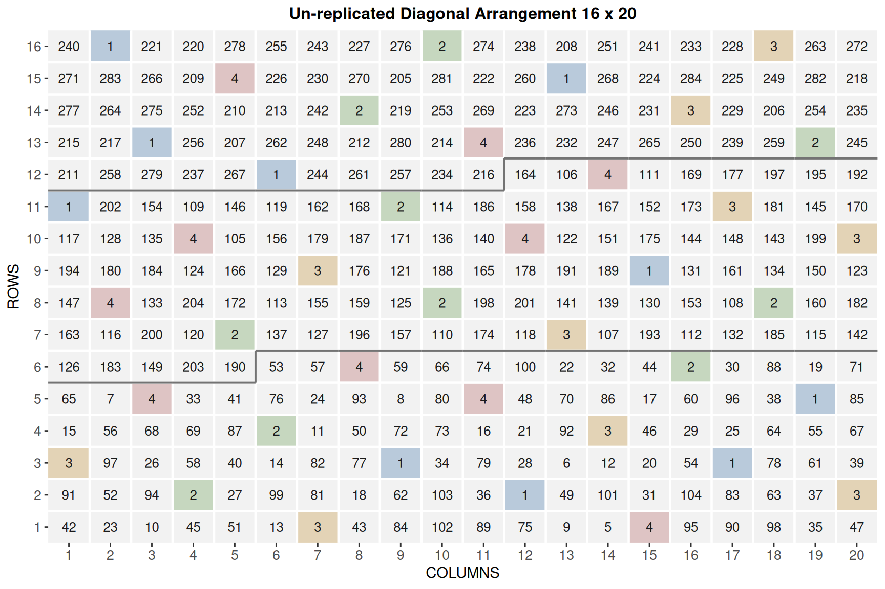
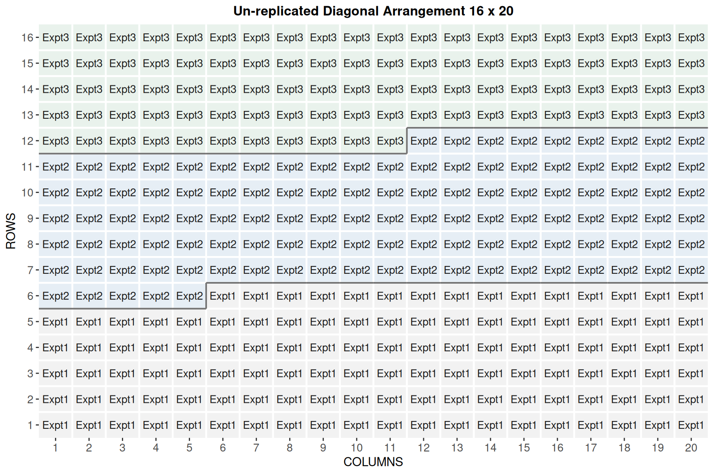
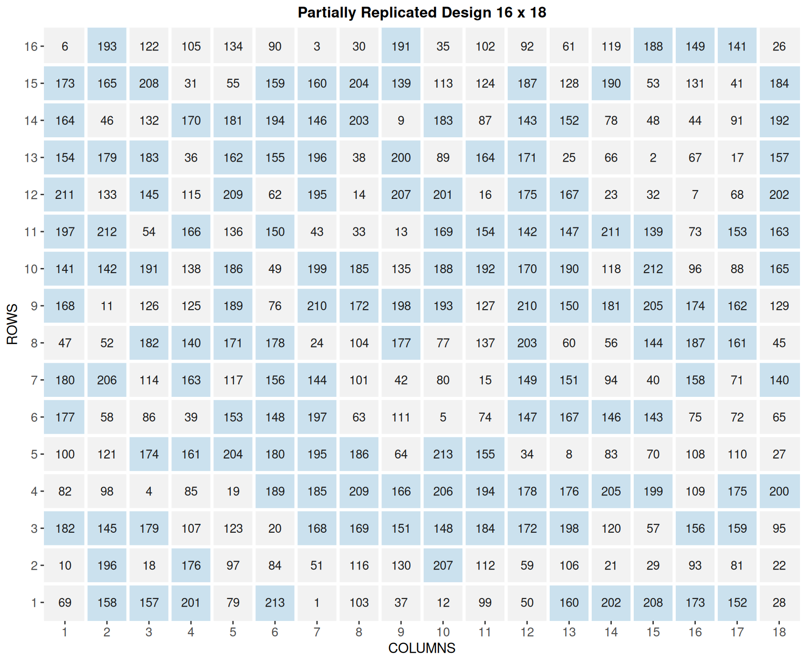

FielDHub
Design of experiments for life sciences
An R package and Shiny app that randomizes field, greenhouse and laboratory experiments, with a field map and a field book for every design.


FielDHub is a free, open-source R package and Shiny app for the design of experiments. It randomizes field, greenhouse and laboratory experiments: completely randomized (CRD), randomized complete block (RCBD), Latin square, factorial, split-plot, split-split-plot and strip-plot designs; square, rectangular and alpha lattices, incomplete block and row-column designs; and the unreplicated, augmented, partially replicated (p-rep) and sparse designs used in plant breeding and multi-location trials. It serves agriculture, plant breeding, forestry, and animal and biological sciences.
Every design comes with a field map and a field book. Every design in the app is also an R function with the same arguments, so a script can reproduce what the app made.
What’s new in 1.7.6¶
- Spatial correlations drawn for each trial. In
simulate(), giverho_rowandrho_colas a range, or leave them out, and every simulated trial and location gets its own correlations. The true values are returned inspatial_draws.
What’s new in 1.7.5¶
- Design-aware trait simulation.
stats::simulate(x)generates trait data for all 21 field designs using their treatment and experimental units. - Optional spatial correlation. Simulate field variation on physical row and column coordinates. The Shiny app uses the same simulator for tables, heatmaps, and downloads.
What’s new in 1.7.0¶
- A new design.
augmented_row_column()builds augmented row-column designs, in which every check appears once in every row or every column of the field. It has its own page in the app under Unreplicated Designs. - One style for every field map. One muted colour per replication or block, white alleys between them, grey lines around incomplete blocks, a white grid around every plot, and one muted colour per check.
- Better partially replicated designs. An optional rule keeps the copies of an entry in distinct rows and columns (
rowcol_penalty), and the spreading optimizer is much faster. - A refreshed app. New Welcome, Help and About pages: the Welcome page links to every design, and Help gives each design its guide, reference page and offline
help()command.
See the release notes for every change, including the changes to results for a given seed.
Installation¶
From CRAN:
install.packages("FielDHub")
The development version, from GitHub:
remotes::install_github("DidierMurilloF/FielDHub")
Launch the app¶
library(FielDHub)
run_app()
The app’s dependencies install with the package, and it needs Shiny 1.8.1 or newer. To keep other sessions responsive while a long design runs, install mirai and start the app with run_app(workers = 2L). Workers need an installed FielDHub; without mirai, or when running from the package source, designs run in the app’s own session.
Designs¶
FielDHub has 21 designs, grouped as in the app’s menus. Each links to its reference page.
| Menu | Design | R function |
|---|---|---|
| Unreplicated Designs | Single Diagonal Arrangement | diagonal_arrangement() |
| Multiple Diagonal Arrangement | diagonal_arrangement() |
|
| Optimized Arrangement | optimized_arrangement() |
|
| Augmented RCBD | RCBD_augmented() |
|
| Augmented Row-Column | augmented_row_column() |
|
| Sparse Allocation | sparse_allocation() |
|
| Partially Replicated Designs | Single and Multi-Location p-rep | partially_replicated() |
| Optimized Multi-Location p-rep | multi_location_prep() |
|
| Lattice Designs | Square Lattice | square_lattice() |
| Rectangular Lattice | rectangular_lattice() |
|
| Alpha Lattice: alpha(0,1) | alpha_lattice() |
|
| Other Designs | Completely Randomized Design (CRD) | CRD() |
| Randomized Complete Block Designs (RCBD) | RCBD() |
|
| Latin Square Design (LSD) | latin_square() |
|
| Latin Rectangle Design | latin_rectangle() |
|
| Factorial Designs | full_factorial() |
|
| Split-Plot Design | split_plot() |
|
| Split-Split-Plot Design | split_split_plot() |
|
| Strip-Plot Design | strip_plot() |
|
| Incomplete Blocks Design (IBD) | incomplete_blocks() |
|
| Resolvable Row-Column Design (RRCD) | row_column() |
What you get¶
- A field map of every location, ready for reports.
- A field book with plot numbers, rows, columns and entries, to download and load into a database or field app.
- Simulated data. The app can simulate a response variable along with the randomization, for teaching and for testing an analysis before the season.
- A reproducible record.
write_design()saves a design or a standalone replay script,read_design()reads it back, andreproduce_design()rebuilds it from its recorded inputs and seed.
Example: a multiple diagonal arrangement¶
A project needs to test 280 genotypes in a field of 16 rows and 20 columns, split among three experiments. Four checks are placed on diagonals across the experiments and fill 40 plots, 12.5% of the field. To get the same design in the app and in a script, use the same seed, here 1249.
diagonal <- diagonal_arrangement(
nrows = 16,
ncols = 20,
lines = 280,
checks = 4,
plotNumber = 101,
splitBy = "row",
seed = 1249,
kindExpt = "DBUDC",
blocks = c(100, 100, 80),
exptName = c("Expt1", "Expt2", "Expt3")
)
A summary of the design:
print(diagonal)
Un-replicated Diagonal Arrangement Design
Information on the design parameters:
List of 11
$ rows : num 16
$ columns : num 20
$ treatments : num [1:3] 100 100 80
$ checks : int 4
$ entry_checks :List of 1
..$ : int [1:4] 1 2 3 4
$ rep_checks :List of 1
..$ : num [1:4] 10 10 10 10
$ locations : num 1
$ planter : chr "serpentine"
$ percent_checks: chr "12.5%"
$ fillers : num 0
$ seed : num 1249
Check spacing — Location 1
Optimization: OFF
Distance: Euclidean, in grid steps
Same-check neighbor radius: 5 grid steps
Metric Value
Minimum same-check distance 2.828
Mean nearest same-check distance 3.646
Mean pairwise same-check distance 9.703
Occurrences with a same-check neighbor 77.5%
Distance averages give equal weight to checks with repeated occurrences.
Minimum distance is the smallest across checks.
Neighbor percentage includes all check occurrences.
NA means that a same-check distance cannot be calculated.
Spacing metrics do not measure statistical precision.
10 First observations of the data frame with the diagonal_arrangement field book:
ID EXPT LOCATION YEAR PLOT ROW COLUMN CHECKS ENTRY TREATMENT
1 1 Expt1 1 2026 101 1 1 0 42 Gen-42
2 2 Expt1 1 2026 102 1 2 0 23 Gen-23
3 3 Expt1 1 2026 103 1 3 0 10 Gen-10
4 4 Expt1 1 2026 104 1 4 0 45 Gen-45
5 5 Expt1 1 2026 105 1 5 0 51 Gen-51
6 6 Expt1 1 2026 106 1 6 0 13 Gen-13
7 7 Expt1 1 2026 107 1 7 3 3 Check-3
8 8 Expt1 1 2026 108 1 8 0 43 Gen-43
9 9 Expt1 1 2026 109 1 9 0 84 Gen-84
10 10 Expt1 1 2026 110 1 10 0 102 Gen-102
The first 12 rows of the field book:
head(diagonal$fieldBook, 12)
ID EXPT LOCATION YEAR PLOT ROW COLUMN CHECKS ENTRY TREATMENT
1 1 Expt1 1 2026 101 1 1 0 42 Gen-42
2 2 Expt1 1 2026 102 1 2 0 23 Gen-23
3 3 Expt1 1 2026 103 1 3 0 10 Gen-10
4 4 Expt1 1 2026 104 1 4 0 45 Gen-45
5 5 Expt1 1 2026 105 1 5 0 51 Gen-51
6 6 Expt1 1 2026 106 1 6 0 13 Gen-13
7 7 Expt1 1 2026 107 1 7 3 3 Check-3
8 8 Expt1 1 2026 108 1 8 0 43 Gen-43
9 9 Expt1 1 2026 109 1 9 0 84 Gen-84
10 10 Expt1 1 2026 110 1 10 0 102 Gen-102
11 11 Expt1 1 2026 111 1 11 0 89 Gen-89
12 12 Expt1 1 2026 112 1 12 0 75 Gen-75
The field map. Each check has its own muted colour and appears throughout the field; the grey lines mark where each experiment starts and ends.
plot(diagonal)

The same field by experiment:
plot(diagonal, text.string = "EXPT")

In the app you can also choose how many filler plots to add and where. The R function adds fillers only when the experiments do not fill the field.
More examples are in the diagonal arrangement article.
Example: a partially replicated design¶
Partially replicated (p-rep) designs are common in early-generation trials: some entries are replicated and the rest appear once. Here 75 entries appear twice and 138 entries once, in a field of 16 rows and 18 columns (288 plots), with seed 77.
pREP <- partially_replicated(
nrows = 16,
ncols = 18,
repGens = c(138, 75),
repUnits = c(1, 2),
planter = "serpentine",
plotNumber = 1,
exptName = "ExptA",
locationNames = "FARGO",
seed = 77
)
A summary of the design:
print(pREP)
Partially Replicated Design
Replications within location:
LOCATION Replicated Unreplicated
1 FARGO 75 138
Information on the design parameters:
List of 10
$ rows : num 16
$ columns : num 18
$ min_distance : num 5
$ incidence_in_rows : num 1
$ locations : num 1
$ planter : chr "serpentine"
$ experimental_plots: num 288
$ field_capacity : num 288
$ fillers : num 0
$ seed : num 77
10 First observations of the data frame with the partially_replicated field book:
# A tibble: 10 × 11
ID EXPT LOCATION YEAR PLOT ROW COLUMN REP CHECKS ENTRY TREATMENT
<int> <chr> <chr> <chr> <dbl> <int> <int> <int> <dbl> <dbl> <chr>
1 1 ExptA FARGO 2026 1 1 1 1 0 69 G69
2 2 ExptA FARGO 2026 2 1 2 1 158 158 G158
3 3 ExptA FARGO 2026 3 1 3 1 157 157 G157
4 4 ExptA FARGO 2026 4 1 4 1 201 201 G201
5 5 ExptA FARGO 2026 5 1 5 1 0 79 G79
6 6 ExptA FARGO 2026 6 1 6 1 213 213 G213
7 7 ExptA FARGO 2026 7 1 7 1 0 1 G1
8 8 ExptA FARGO 2026 8 1 8 1 0 103 G103
9 9 ExptA FARGO 2026 9 1 9 1 0 37 G37
10 10 ExptA FARGO 2026 10 1 10 1 0 12 G12
The first 12 rows of the field book:
head(pREP$fieldBook, 12)
# A tibble: 12 × 11
ID EXPT LOCATION YEAR PLOT ROW COLUMN REP CHECKS ENTRY TREATMENT
<int> <chr> <chr> <chr> <dbl> <int> <int> <int> <dbl> <dbl> <chr>
1 1 ExptA FARGO 2026 1 1 1 1 0 69 G69
2 2 ExptA FARGO 2026 2 1 2 1 158 158 G158
3 3 ExptA FARGO 2026 3 1 3 1 157 157 G157
4 4 ExptA FARGO 2026 4 1 4 1 201 201 G201
5 5 ExptA FARGO 2026 5 1 5 1 0 79 G79
6 6 ExptA FARGO 2026 6 1 6 1 213 213 G213
7 7 ExptA FARGO 2026 7 1 7 1 0 1 G1
8 8 ExptA FARGO 2026 8 1 8 1 0 103 G103
9 9 ExptA FARGO 2026 9 1 9 1 0 37 G37
10 10 ExptA FARGO 2026 10 1 10 1 0 12 G12
11 11 ExptA FARGO 2026 11 1 11 1 0 99 G99
12 12 ExptA FARGO 2026 12 1 12 1 0 50 G50
The field map. Replicated entries are on soft blue and the rest on light grey.
plot(pREP)

More examples are in the partially replicated article.
For teaching¶
FielDHub is used in courses on statistics, experimental design and plant breeding. Students see the randomization, the field layout and the data in one place; simulated responses give them a data set to analyse from the first class; and because every design is an R function with a seed, an assignment can give each student the same randomization, or a different one.
Documentation and help¶
- The FielDHub website has a guide for every design, worked examples and the function reference.
- In R,
help("diagonal_arrangement", package = "FielDHub")and the other help pages work offline. - Video tutorials walk through the app.
- Found a bug or missing a design? Open an issue.
Citation¶
If you use FielDHub, please cite the paper in the Journal of Open Source Software. Run citation("FielDHub") in R for the reference.
Contributing¶
Contributions are welcome; see the contributing guide and the code of conduct.
FielDHub is developed at Agricultural Data Analytics, North Dakota State University.